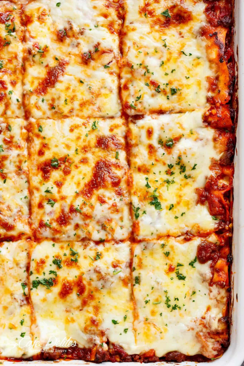

Mamma's Best Lasagna
the best lasagna is here! Layered with a rich meat sauce and a creamy parmesan white sauce, plus the perfect amount of mozzarella cheese! no ricotta cheese needed.

Meat Sauce
- 1 tablespoon olive oil
- 1 onion, finley chopped
- 1 carrot, finely diced
- 4 gloves garlic, minced
White Sauce
- 4 tablespoons butter
- 1/4 cup flour, all purpose or plain
- 3 1/2 cups milk
- 1 cup fresh shredded parmesan
Lasagna
- 2 tablespoons finely choppped fresh parsley
- 500g fresh mozzarella cheese, shredded
- 375g fresh lasagna sheets
INSTRUCTIONS
Meat Sauce:
- Heat oil in a large pot over medium heat, then add in the onion and carrots and cook for 8-10 minutes, or until softened. Add in the garlic and sauté for about 1 minute, until fragrant.
- Add beef and pork (if using) and cook while breaking it up with the end of your spoon, until browned.
- Pour in the Passata, crushed tomatoes, tomato paste, crushed bouillon and dried herbs. Mix well to combine and bring to a gentle simmer. Season with desired amount of salt and pepper (I use about 3/4 teaspoon each) and sugar if needed. Cover and cook for about 20-30 minutes, occasionally mixing, until the sauce has thickened slightly and meat is tender.
- Adjust salt, pepper and dried herbs to your taste.
To Assemble:
- Preheat oven to 350°F | 180°F.
- Spoon about 1 cup of meat sauce on the base of a 9x13-inch baking dish, then cover with lasagna sheets. (Trim sheets to fit over the meat if needed.) Layer with 2 cups of meat sauce (or enough to cover pasta), 1 cup of white sauce and half of the mozzarella cheese. Repeat layers (leaving the remaining cheese for the top).
- Pour the remaining meat sauce and white sauce over the last layer of lasagna sheets and top with the remaining mozzarella cheese. Bake for 25 minutes or until golden and bubbling.
- Garnish with parsley and let stand for about 10 minutes before slicing and serving.
NOTES
*Fresh lasagna pasta sheets are found in the refrigerator section of most grocery stores. We prefer fresh pasta in our lasagna, but if you can't find or don't have access to fresh, you can use dried.
No Cook or Instant Noodles can be used without pre-boiling (check the packet instructions first). You can assemble as normal. To ensure the pasta has enough liquid to cook through while the lasagna is baking, we normally add about 1/2 cup of water to our sauce when using INSTANT.